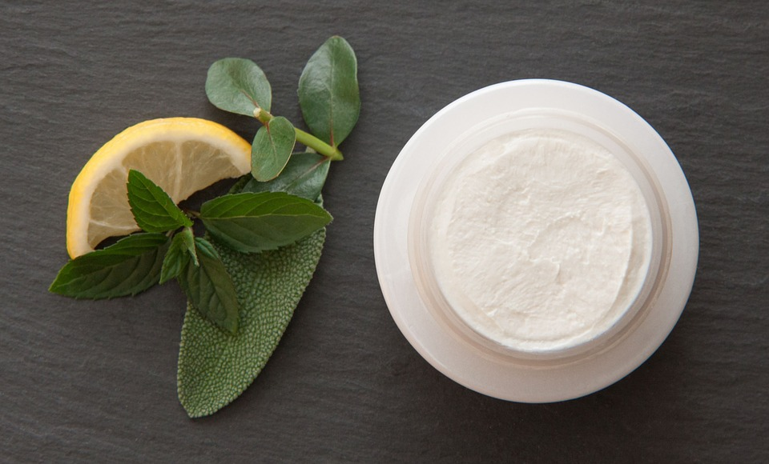
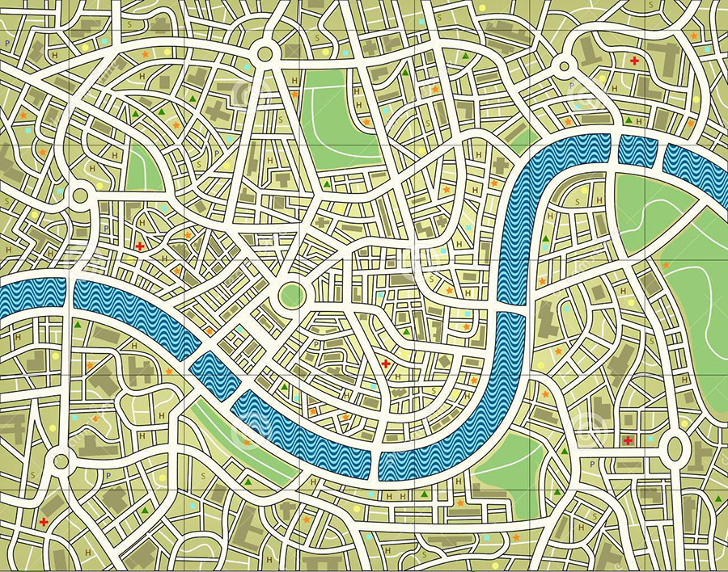

Iskustva
Pročitajte mišljenja i iskustva druguh o ovom proizvodu.
O proizvodu
Sastojci i način lećenja.
Kontakt
Kontaktirajte nas ili postavite niko pitanje bla bla
Moje lično iskustvo
Samo mesec dana posle provedenih 10 dana na Klinici za kozne bolesti, gde sam dobijala velike doze kortikosteroida, a telo premazivano mascu iz iste kante za sve kozne bolesti, zavrsila sam u hitnoj pomoci na VMA. Ekcem je u jos vecem zamahu zahvati celo moje telo I glavu koja je bila, ne preterujem, kao lopta koja se naduvava. I pored svih veza da budem primljena na koznoj klinici te kultne medicinske ustanove, I pored tako nadutog lica, ruku I tela gde se primecuju ranice od cesanja, konzilijum lekara je doneo odluku da moje stanje nije urgentno I da se vratim na koznoj klinici u kojoj sam lezala 10 dana, samo mesec dana ranije. Moj muz je bio ljut I isfrustriran, ja tuzna, nemocno sam plakala I mislila da mi je u 28-oj godini buducnost potpuno neizvesna, jer izgleda mojoj opakoj koznoj bolesti nema leka. Na povratku moj muz mi je rekao: Ljubavi budi hrabra. Verovatno postoji razlog za tvoju bolest I iz toga ce se sigurno izroditi nesto pozitivno. I bio je u pravu. To sto vidite na slici je moje zdravo lice I zdrava koza. Iz ogromne patnje pronasla sam lek za sebe I odlucila da ga podelim sa svima koji citate ove redove I svima kojima je lek potreban, odraslima I deci.